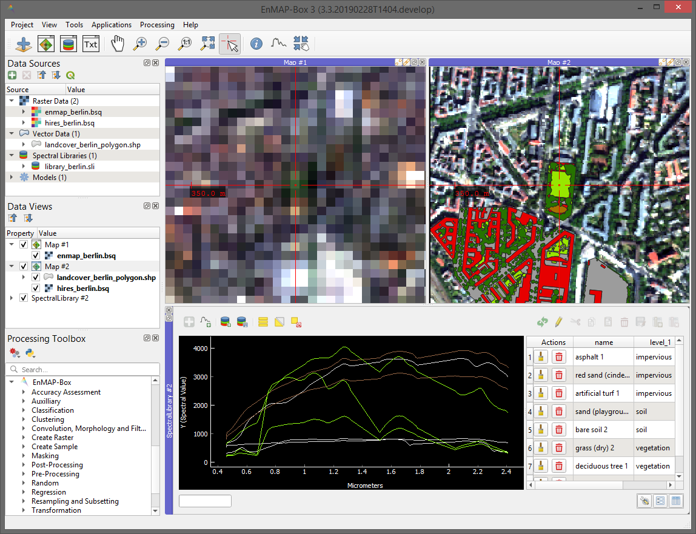

EnMAP-Box
The EnMAP-Box is free and open source
QGIS to visualize and process remote sensing raster data.
It is particularly developed to handle imaging spectroscopy data, as from the upcoming
EnMAP sensor.

A QGIS Plugin for Hyperspectral Remote Sensing

Graphical User Interface

Spectral Libraries
Highlights
- an easy-to-use graphical user interface for the visualization of vector and raster data sources in parallel and in spatially linked maps
- collection and visualisation of spectral profiles spectral libraries. Spectral profiles can come from different sources, e.g. raster images, field spectrometer or table-sheets.
- enhances the QGIS Processing Framework with many algorithms commonly used in remote sensing and imaging spectroscopy, e.g. support vector machines or random forest based raster
classification, regression, cluster approaches from the scikit-learn library.
- applications specific to imaging spectroscopy and the EnMAP program, e.g. the simulation of spectral profiles, atmospheric correction
of EnMAP data, mapping of geological classes from EnMAP data and more...
License
The EnMAP-Box is released under the GNU General Public License (GPL) Version 3 or above. A copy of this licence can be found at
http://www.gnu.org/licenses/gpl.html/.
Links
Back to top